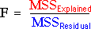

Comparing models
When modelling the effect of a numerical factor, we usually prefer to use simple linear or quadratic models rather than a more general model that treats the factor levels as categorical. However we must test whether the data are consistent with such models.
Tests are based on the explained sums of squares that were described on the previous page. Each move down the hierarchy of models (no effect, linear, quadratic and categorical) reduces the residual sum of squares by an amount that is explained by the extra parameters. We must assess whether each explained sum of squares is higher than could be reasonably expected if the simpler model was true. This is done in an analysis of variance table.
As in the simple analysis of variance table that was described earlier, mean sums of squares are found by dividing each sum of squares by its degrees of freedom. F ratios are then calculated by dividing each mean explained sum of squares by the mean residual sum of squares.

If the parameter(s) being added have no effect, the corresponding F ratio is expected to be around 1.0, though it can be somewhat higher or lower by chance. A p-value assesses whether it is unusually high and is interpreted in a similar way to all other p-values — the closer the p-value to zero, the stronger the evidence that the term is needed in the model.
The method will be clearer with an example.
Hardness of ball bearings
The anova table below initially treats the cooling rate as categorical (with 15 levels) so there is a single row for the explained variation (with 14 degrees of freedom).
Click Split ssq for factor to split the explained sum of squares into sums of squares for linear, quadratic and 'lack of fit' rows.
The p-values are interpreted as follows:
Interpretation
We therefore conclude that cooling rate does affect the hardness of the ball bearings and that a linear model appears adequate to describe the relationship between cooling rates of 10 and 80.